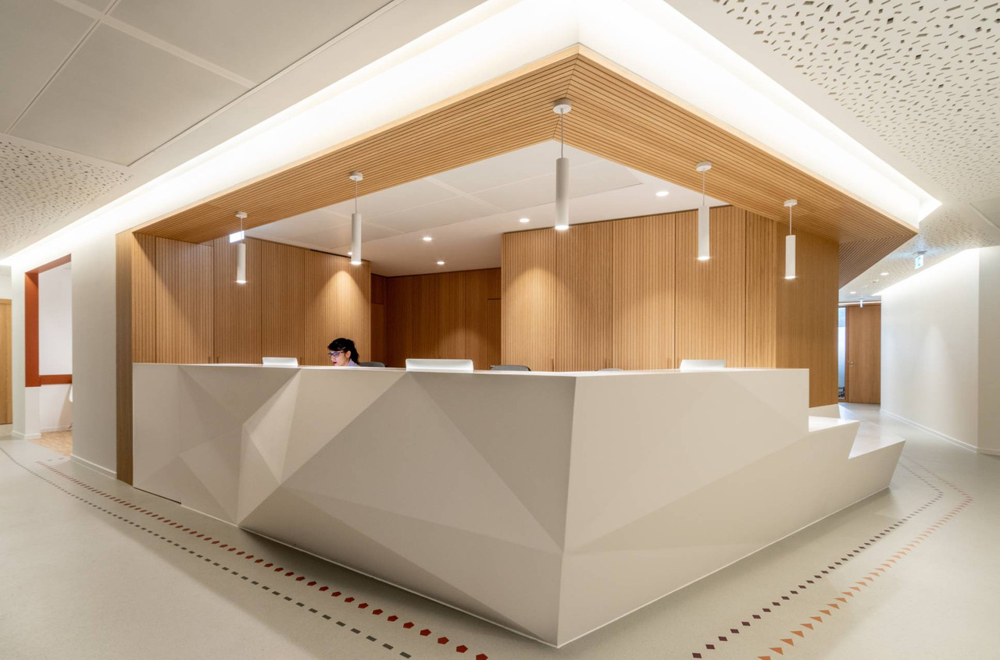

Présentation du Cabinet Médical
Bienvenue au Cabinet Médical de la Santé !
Notre cabinet réunit une équipe de professionnels de la santé dédiée à votre bien-être. Nous proposons une gamme complète de services médicaux dans un cadre moderne et accueillant.
Notre Équipe :
- Trois kinésithérapeutes : Spécialistes en rééducation et thérapie physique, nos kinésithérapeutes sont là pour vous aider à retrouver mobilité et confort. Ils offrent des soins personnalisés pour répondre à vos besoins spécifiques.
- Un médecin généraliste : Disponible pour des consultations de médecine générale, notre médecin généraliste assure le suivi de votre santé, la prévention et le traitement des maladies courantes. Il est à l'écoute de vos préoccupations et vous accompagne dans votre parcours de santé.
- Un dentiste : Expert en soins dentaires, notre dentiste prend en charge votre santé bucco-dentaire, des contrôles de routine aux traitements plus spécialisés. Il veille à ce que vous ayez un sourire sain et éclatant.
Nous nous engageons à vous offrir des soins de qualité, dans un environnement où vous vous sentirez en confiance et bien accueilli. N'hésitez pas à prendre rendez-vous pour découvrir nos services et bénéficier de notre expertise. Votre santé est notre priorité absolue.
Nous espérons vous voir bientôt au Cabinet Médical de la Santé.
